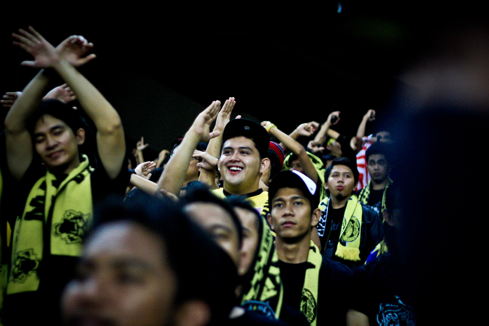
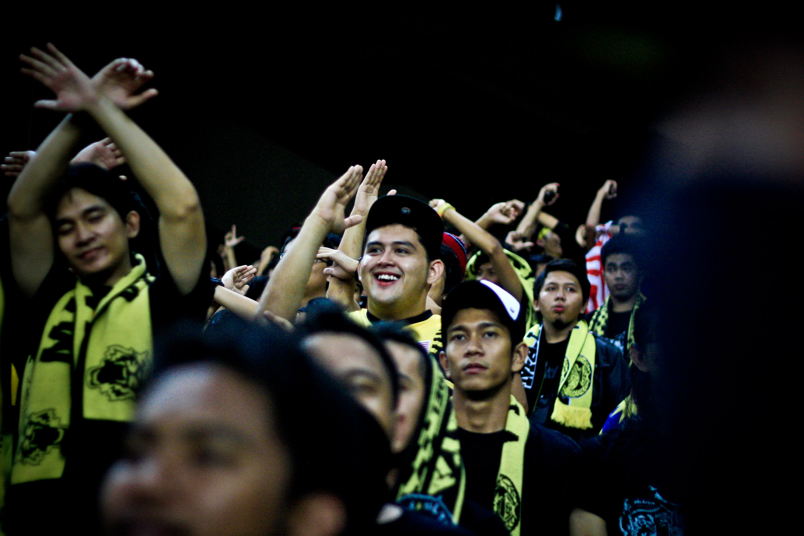

Gambar

Penonton Bersorak Kegembiraan
Chant Sehingga Minit Terakhir
FAM Bangsat

FAM
Demi Negara Tercinta
Ayuh Semua Penonton
Sebelum Masuk Stadium
Ultras Malaya
Stadium Bukit Jalil
Ultras Malaya ialah sebuah gerakan apolitical yang menghimpunkan khalayak penyokong bola sepak tempatan daripada pelbagai latar belakang tanpa mengira bangsa dan agama. Dengan matlamat untuk mengangkat martabat sukan bola sepak tanah tumpah darah kita menerusi budaya sokongan, Ultras Malaya menuntut mana-mana individu yang ingin turut serta dengan gerakan ini, agar meninggalkan idealogi mereka tatkala bersama-sama mereka. Ultras Malaya bermula dengan sekumpulan kecil anak-anak muda, dan kumpulan ini telah membesar serta meraih sokongan daripada seluruh pelusuk Negara.
Ultras Malaya telah memainkan peranannya untuk menyumbang ke arah peralihan minat anak-anak muda daripada menumpukan bola sepak Eropah kepada bola sepak tempatan. Jika sebelum ini ramai yang memberikan alasan untuk tidak ke stadium kerana mutu permainan yang tidak setaraf Eropah, kini semakin ramai penonton yang hadir ke stadium yang sudah pastinya bukan sekadar ingin penyaksikan persembahan di atas padang, tetapi sebaliknya mereka mahu merasai sendiri kemeriahan suasana dan atmosfera sokongan. Adakah mutu permainan bolasepak tempatan sudah setaraf Eropah? Lihat sahaja bagaimana pasukan Melaka United yang menghuni Liga FAM (divisyen ketiga), namun begitu ramai penyokongnya hadir memeriahkan stadium.
Ingin diingatkan bahawa Ultras Malaya turut memandang serius gejala-gejala tidak sihat yang dilakukan secara berleluasa oleh individu-individu di dalam FAM, di bawah kepimpinan Presiden kini. Antaranya ialah bagaimana seorang Setiausaha Agung boleh mengetepikan bantahan terhadap Myanmar walaupun terdapat bukti kuat bahawa penipuan umur berlaku pada Kelayakan Piala Asia B-22, bagaiman Setiausaha Agung dengan mudah menerima alasan pembatalan saat akhir perlawanan jelajah Australia Harimau Muda walaupun ia diberikan oleh pihak ketiga.
Beberapa pihak termasuklah FAM sendiri, telah mengundang Ultras Malaya ke acara anjuran mereka sebagai salah satu pemegang taruh (stakeholder) dalam bolasepak Malaysia yang mewakili khalayak penyokong.
TANPA dibiayai mana-mana pihak, sekumpulan penyokong pasukan bola sepak kebangsaan menggelarkan diri mereka sebagai Ultras Malaya sentiasa hadir memenuhkan segenap ruang stadium sebagai tanda sokongan kepada Harimau Malaya Kumpulan penyokong itu akan berdiri sepanjang 90 minit perlawanan berlangsung, dan akan menyanyi tanpa henti sambil diiringi paluan gendang skuad pemalu gendang ultras, selain melakukan persembahan melalui mafla, bendera, kad dan sebagainya untuk membangkit rasa ghairah dan memeriahkan suasana stadium. Bagi mereka, apa yang penting adalah menunjukan semangat patriotik pada negara dan menunjukkan sokongan tidak berbelah bahagi kepada pasukan kebangsaan.
Menyingkap sejarah awal penubuhan kelab penyokong yang semakin dikenali itu, Ultras Malaya hanya mempunyai kira-kira 10 hingga 15 orang di awal penubuhan pada 2007, dan dari situ perbincangan diadakan secara serius untuk menubuhkan sebuah kumpulan penyokong tegar dikenali sebagai Ultras Malaya. Pada ketika itu, skuad negara dirundum malang apabila dimalukan dengan kekalahan teruk pada kejohanan Piala Asia di mana kita menjadi tuan rumah. Tanpa memikirkan prestasi bola sepak negara ketika itu, apa yang kami utamakan terus bersama memberikan sokongan kepada pasukan kebangsaan.
Pada asalnya Ultras Malaya bergerak aktif melalui laman sesawang satu lagi kumpulan penyokong bola sepak Malaysia, Hariamaumalaya.com dan pada 2010, barulah Ultras Malaya bergerak sendiri melalui laman sesawangnya ultrasmalaya.net selain turut aktif melalui facebook ultras malaya 07. Ketika ini, lebih kurang 1,000 ahli menyertai Ultras malaya yang sentiasa menyokong pergerakan pasukan kebangsaan. “Setiap kali pasukan kebangsaan beraksi, kami mampu mengumpul antara 400 hingga 600 ahli tegar hadir memberikan sokongan.
Sambil mengakui peningkatan pasukan bola sepak negara ketika ini kembali menyemarakkan suasana di stadium, mereka berharap lebih ramai rakyat Malaysia sanggup berkorban masa dan wang ringgit untuk ke stadium dengan memberikan sokongan moral kepada pasukan kebangsaan.

Penonton Bersorak Kegembiraan
Chant Sehingga Minit Terakhir
FAM Bangsat
FAM
Demi Negara Tercinta
Ayuh Semua Penonton
Sebelum Masuk Stadium
Ultras Malaya
Stadium Bukit Jalil
Ayuh Bangkit Bersama..
Demi Nusa Dan Bangsa
Kan Ku Julang Nama Mu ..
Oh Tanahair Ku Malaysia Yang Satu 2x
Ma..Lay..Sia!!
OOOOoooo..OOOOoooo..OOOoo..OOOOOoooOOO..OOOOOooo
Ma..Lay..Sia!!
Bangun Semua Penyokong,
Satukan Hatimu,
Tinggikan Sorakanmu,
Demi Malaysia,
ooooooo...Demi Malaysia, 2x

Ole Ole! (Tepuk Tangan 2x) 2x,
Ole Ole Ole Ole Ole,
Ole Ole! (Tepuk Tangan 2x) 2x,
Berjuanglah! Pahlawanku!
Satukanlah Tekad Semangatmu..
Kami Rela! Korban Nyawa!
Demi Daulat Negara Tercinta..
Kami Turun Ke Stadium Sehati Sejiwa!!2x
Ma..Lay..Sia..!!!2x
Sehati Sejiwa!!
Areya reya reya reyo (4x)
Bunuh Musuhmu Pahlawanku (4x)
ooo..oooooooo.oooooooooo.oooooooo
hup 2x
ooo..oooooooo.oooooooooo.oooooooo
hup 2x
Hari Ini Aku Datang Keranamu,
Hari Ini Dua Hati Jadi Satu,
Darah Engkau Darah Aku Jadi Satu,
Selamanya Malaysia kan Dihatiku,
OOOooooo OOoooo ooooo OOoooooo,
Selamanya Malaysia kan Di Hati ku..

Ultras Malaya, Ekor Harimau Malaya, 2x
Kami Turun Ke Bukit Jalil, Satu Jiwa Sokong Malaysia,
Singapo bang**t, DiBunuh Saja.
Malaysia..Malaysia..
Kami Di Sini Malaysia
Malaysiaâ..Malaysia..
Hidup Mati Ku Malaysia
OO OO! (Tepuk 2x) Oo Oo Oo! (Tepuk 2x)
Oo Oo Oo Oo Oo Ooooo..2x
Hidup Mati Ku Malaysiaâ..
Oh Malaysia, Kita Bersaudara,
Oh Malaysia, Satukan Jiwamu,
Selamanya Harimau Malaya,
Selagi Kita Bernyawa,
Oh Malaysia, Kau Kebanggaanku